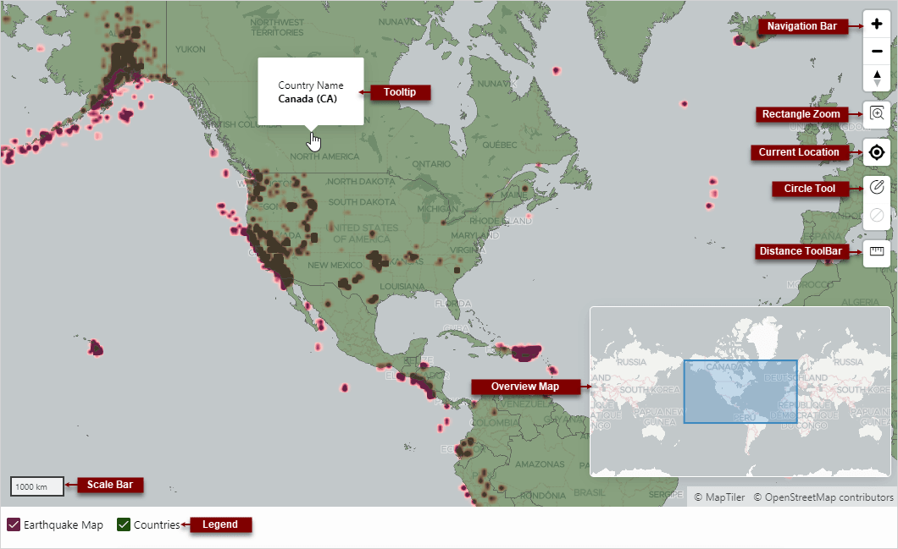

10.4.1 About Supported Maps
The map component consists of a background map and spatial geometry objects sourced from data in a table or from a REST Data Source.
About Background Maps
The background map is static and comes from Oracle Elocation Service. These background maps are ready to use and do not require any API keys. However, in order to display the background map, the end user's browser must have an internet connection and access to https://maps.oracle.com.
Some background maps are also available as Vector Tile Layers which
include the layers OpenStreetMap Position, OpenStreetMap
Bright, and OpenStreetMap DarkMatter. Vector maps
provide superior resolution over raster maps for all map zoom levels. For new
applications, Vector Tile Layer usage is enabled by default. For applications
created before Oracle APEX release 22.2, you must enable Vector Tile Layers in Shared Components, Component
Settings. See Configuring Vector Tile Layers for Maps
Custom Background Maps
Developers can add custom map backgrounds under Shared Components, Other Components. Supported map background types include Raster, Vector, and OGC WMS. To learn more, see Creating Custom Map Backgrounds.
About Spatial Geometry Objects
- Points - Points (for example, customer or supplier locations) display as markers.
- Lines - Lines represent features like roads or paths.
- Polygons - Polygons represent areas like parcels, states or countries.
- Heat Map - Heat Maps are used to visualize the point density. The more points that are clustered together, the more intense the color becomes. Use this option to visualize the spatial distribution of population or incidents.
- Extruded Polygons - Display as three-dimensional, extruded, objects. The height of the 3D object visualizes a column value.
You can source spatial geometry objects from either:
- Geometry Column - Supported datatypes include
SDO_GEOMETRY,VARCHAR2, orCLOB.VARCHAR2andCLOBcolumns must contain geometry information in GeoJSON format. - Two Numeric Columns - These columns must contain longitude and latitude values. This option only applies to Point and Heat Map objects.
About Map Controls
From a user's perspective, map regions include a number of controls that enable users to change the display at runtime. Not all of these controls are enabled by default. You can add or remove controls by editing the map region Attributes in Page Designer.

Description of the illustration map_controls.png
The previous map includes the following controls:
- Navigation Bar - Options include Zoom, Zoom Out and Reset Bearing to North.
- Rectangle Zoom - Zoom the map to an area by drawing a rectangle onto the map.
- Current Location - Displays the user's current location from the browser.
- Circle Tool - Enables end users to draw a circle onto the map. When finished, an event is triggered, so that the circle can be processed by Dynamic Actions or JavaScript code.
- Distance Tool - Zooms the map to an area by drawing a rectangle on the map.
- Tooltip - Displays a tooltip. The above example identifies the country name.
- Overview Map - Display an overview map in the lower right.
- Scale Bar - Displays a scale bar on the map.
- Legend - Map legend.
Parent topic: Creating Maps